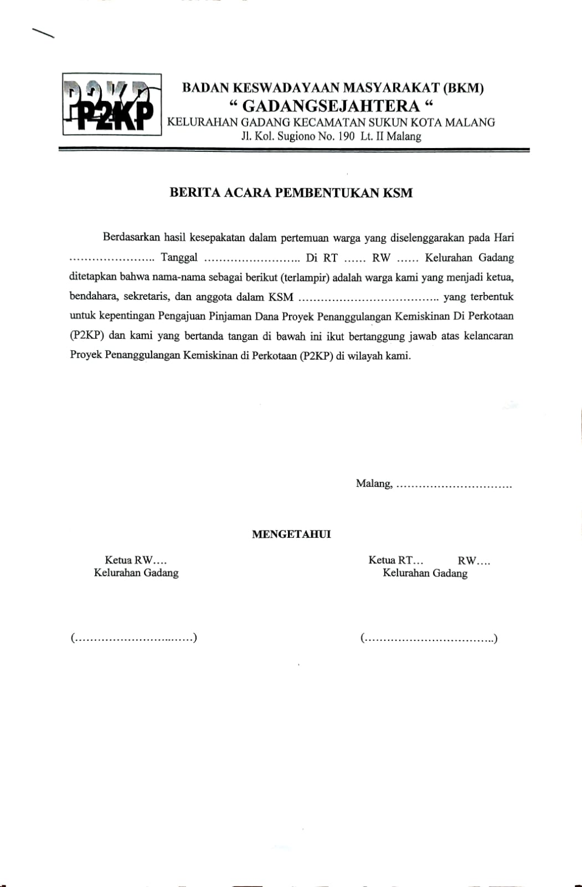

Deskripsi
BKM Gadang Sejahtera didirikan oleh Warga Masyarakat Kelurahan Gadang sesuai dengan Berita Acara Musyawarah Kelurahan Gadang, tanggal 16 (enam belas) bulan Januari tahun 2000 (dua ribu) dan diresmikan secara otentik dengan akta pendirian Nomor 20, tanggal 12 (dua belas) bulan April tahun 2000 (dua ribu) yang disahkan di hadapan notaris RAHARTI ASHARTO. Sarjana Hukum di Malang
Definisi
BKM Badan Keswadayaan Masyarakat adalah wadah berkumpulnya individu berjiwa relawan, bijak, transparan, akuntabel, amanah dalam mengoodinir penanganan kumuh, dan memiliki empati terhadap warga masyarakat berpenghasilan rendah di Kelurahan Gadang.
Visi Misi
Visi
- Mewadai aktivitas penanggulangan kemiskinan warga masyarakat kelurahan gadang
- melembagakan forum musyawarah warga masyarakat
- menumbuhkan dan meningkatkan nilai nilai solidaritas dan kebersamaan/ kegotoroyongan sesama warga masyarakat Kelurahan Gadang
- Meningkatkan taraf hidup melalui kegiatan ekonomi produktif, kegiatan sosial, dan pembangunan lingkungan masyarakat kelurahan Gaadang untuk menanggulangi permasalahan yang dihadapi secara mandiri
Misi
- Memilih, mengangkat dan memberhentikan pimpinan kolektif (PK) "BKM Gadang Sejahtera"
- Mengevaluasi laporan pertanggungjawaban PK "BKM Gadang Sejahtera"
- Menetapkan dan mengesahkan perubahan anggaran dasar dan anggaran rumah tangga yang diajukan oleh MUSKEL/Rembung Warga Kelurahan Gadang
- Mengesahkan anggaran dan program kerja "BKM Gadang Sejahtera"
Program BKM
- Unit pelayanan keuangan
- Unit pelayanan lingkungan
- Unit pelayanan Sosial
Profile Pengurus
| No |
Nama |
Jabatan dalam Muskel |
| 1 |
Ir. Hadarsono. M.Agr |
Ketua Merangkap Anggota |
| 2 |
Lugito |
Sekretaris Merangkap Anggota |
| 3 |
Lisa Marianti |
Anggota |
Tata cara peminjaman
Kelompok Swadaya Masyarakat (KSM)
- KSM dibentuk oleh dan untuk kepentingan warga masyarakat, dan difasilitasi oleh Pengurus PK "BKM Gadang Sejahtera"
- Persyaratan KSM :
- Anggota berasal dari warga Kelurahan Gadang;
- Anggota harus dari wilayah RT, tidak diperbolehkan berbeda RT (Khusus KSM Ekonomi;
- Anggota KSM sedikitnya 5 (lima) orang, Modul I Pinjaman Bergulir PNPM-MP, dengan ketentuan 2/3 anggotanya dari keluarga ekonomi produktif yang kurang mampu;
- Memperoleh Rekomendasi dari ketua RT dan RW setempat sebagaimana dibuktikan dalam berita acara pembentukan KSM;
- Bersedia menaati seluruh peraturan PK "BKM Gadang Sejahtera".
- KSM dibentuk untuk memperoleh dana yang dikelola oleh PK "BKM Gadang Sejahtera" untuk mengembangkan usaha ekonomi produktif, pembangunan/perbaikan sarana dan prasarana lingkungan untuk peningkatan perekonomian masyarakat
Arsip BKM Gadang Sejahtera
